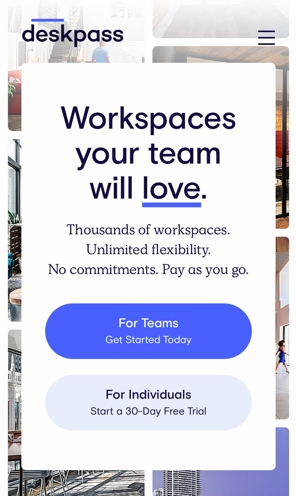
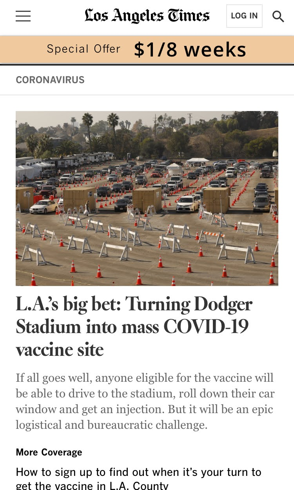

Contrast
Juliana BiciyclesThis website utilizes contrast through dark colors and pictures against a white background. The dark colors contrast with the main white of the site. It is clear and easy to read.

Visual Hierarchy
DeskpassThis website shows visual hierarchy through the format. Your eyes go to the main headline and brings your eye down through the rest of the content. It is stacked, which shows clear hierarchy.

Proximity
Los Angeles TimesIt is important for sites that give the news to have clear proximity. It helps the viwers understand which headlines and images are realated through their proximity to each other. The Los Angeles Times is a good example of this.